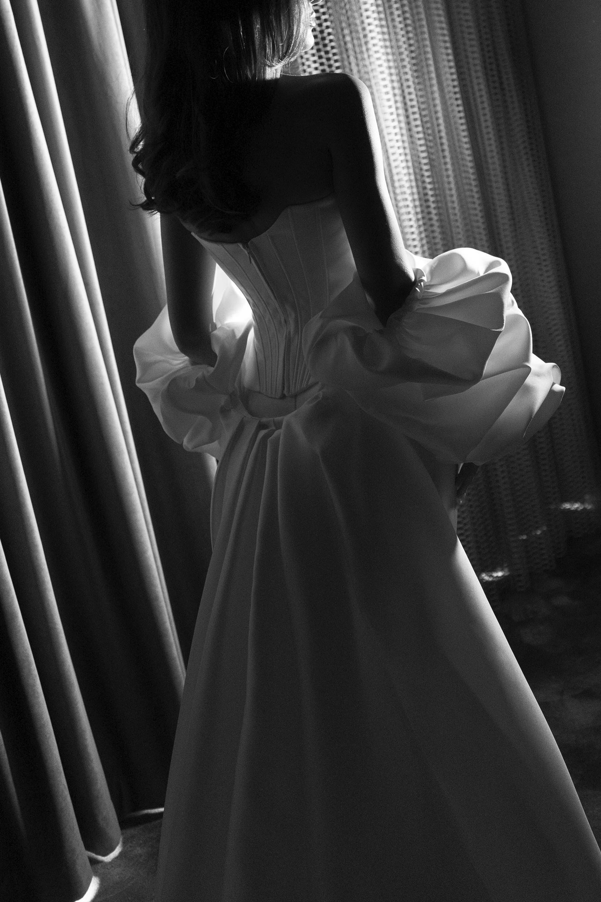
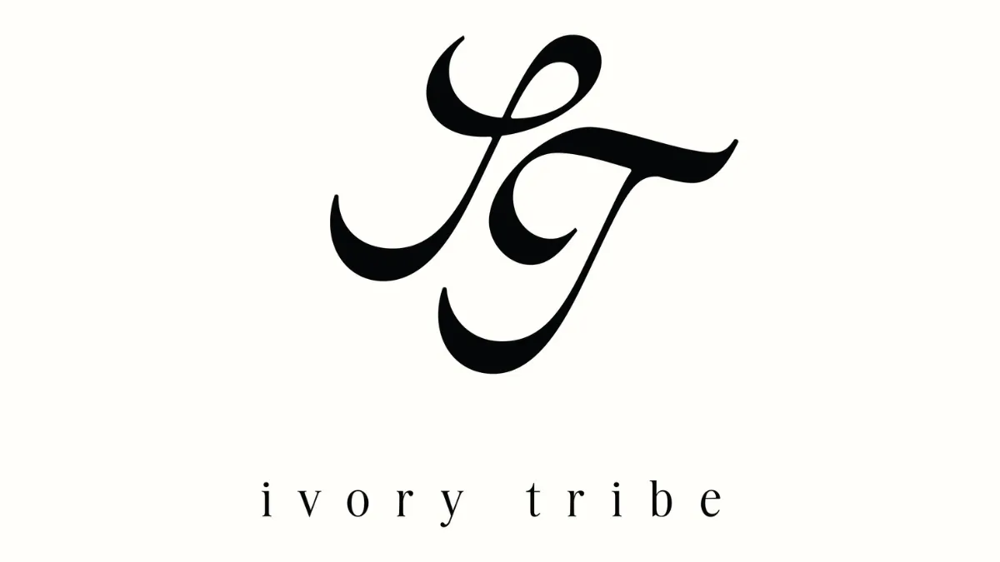
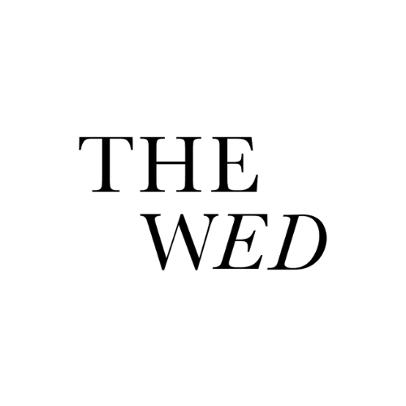
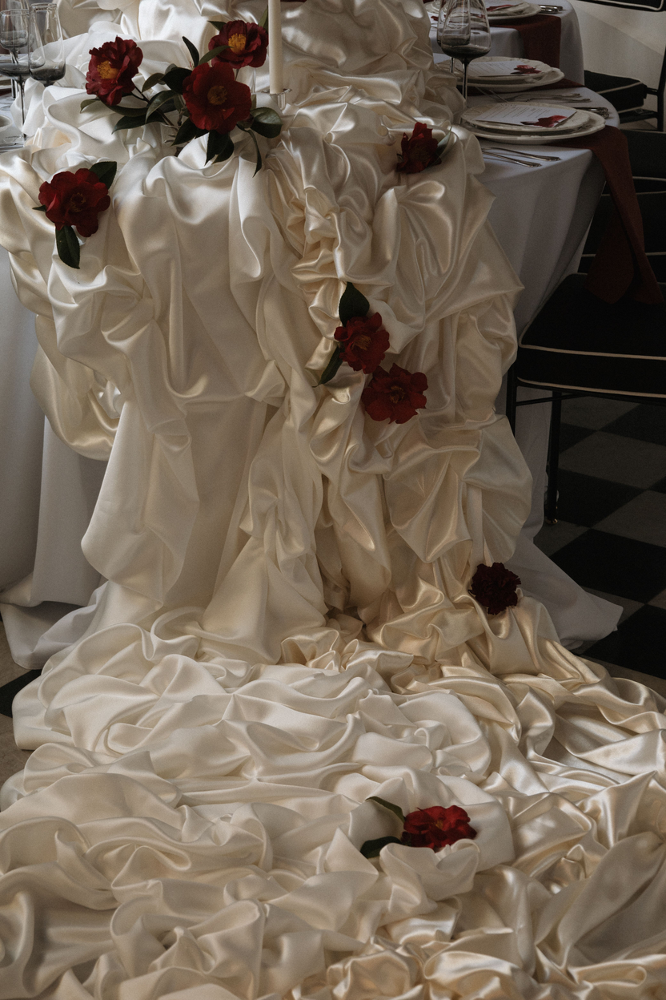
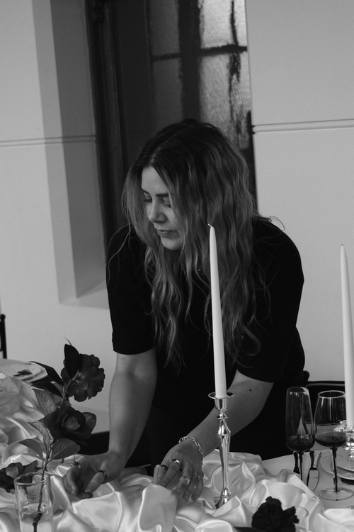

Events done Differently
SAID STUDIO is proudly based in Melbourne / Naarm, on the lands of the Bunurong People of the Kulin Nation. We acknowledge the Traditional Custodians of Country and pay our respects to Elders past and present.
We don't decorate events, we shape them.



Fabric as
Architecture
We use fabric to reshape and transform spaces. Each installation is designed in response to the venue, from softening architecture and defining spaces to creating intimacy or a distinctive focal point.

Meet Carolyn
Founder & Creative DirectorAfter 14 years in global marketing, Carolyn turned a long-time love of hosting, design and making an occasion feel special into SAID STUDIO. At the heart of it is a simple idea: creating celebrations that feel like an escape from the everyday.
Let’s create something unexpected.
We intentionally take on a limited number of events each year, so every celebration receives the care it deserves. Tell us about yours.
Enquire Now